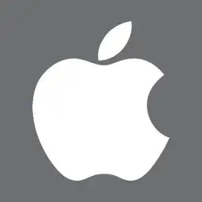

Android
Android es un sistema operativo móvil basado en el núcleo Linux y otros software de código abierto. Fue diseñado para dispositivos móviles con pantalla táctil, como teléfonos inteligentes, tabletas, relojes inteligentes Wear OS, automóviles con otros sistemas a través de Android Auto, al igual los automóviles con el sistema Android Automotive y televisores Android TV.

Apple
Apple, Inc. es una empresa estadounidense que diseña y produce equipos electrónicos, software y servicios en línea. Tiene su sede principal en el Apple Park, en Cupertino (California, Estados Unidos) y la sede europea en la ciudad de Cork (Irlanda).3 Sus productos de hardware incluyen el teléfono inteligente iPhone, la tableta iPad, la computadora personal Mac, el reproductor de medios portátil iPod, el reloj inteligente Apple Watch y el reproductor de medios digitales Apple TV. Entre el software de Apple se encuentran los sistemas operativos iOS, iPadOS, macOS, watchOS y tvOS, el explorador de contenido multimedia iTunes, la suite iWork (software de productividad), Final Cut Pro X (una suite de edición de vídeo profesional), Logic Pro (software para edición de audio en pistas de audio), Xsan (software para el intercambio de datos entre servidores) y el navegador web Safari.

Samsung
Empresa surcoreana, es uno de los mayores productores de aparatos electrónicos del mundo. Se especializa en la producción de una amplia variedad de productos electrónicos de consumo e industriales, incluidos electrodomésticos, dispositivos de medios digitales, semiconductores, chips de memoria y sistemas integrados. La historia de Samsung es digna de ser conocida.